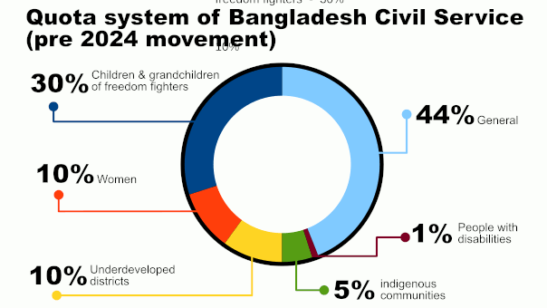
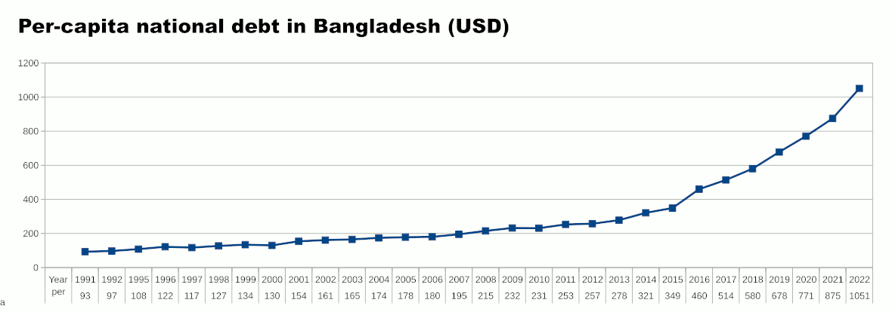
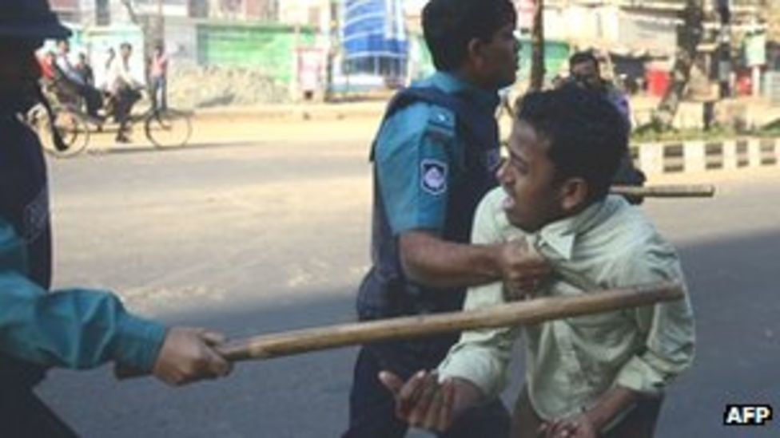
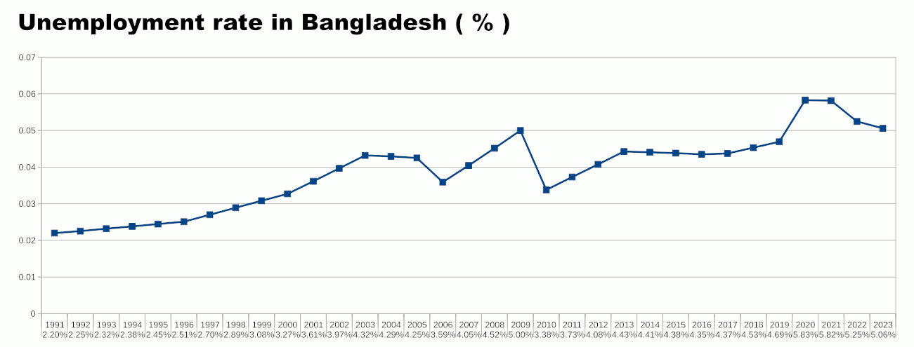

16 Sep, 2024 Ifthekhar Arafin (191803)
বাংলাদেশের ইতিহাসে ২০২৪ সাল একটি গুরুত্বপূর্ণ বছর হিসেবে চিহ্নিত হয়ে থাকবে। এই বছরটি ছিল বৈষম্যের বিরুদ্ধে সংগ্রামের একটি মাইলফলক। বৈষম্যের স্বরূপ ও প্রকৃতি নিয়ে আলোচনা করতে গেলে আমাদের প্রথমেই বুঝতে হবে বৈষম্য কীভাবে সমাজের বিভিন্ন স্তরে প্রভাব ফেলে।

২০২৪
বিপ্লব এর পূর্বের বাংলাদেশ
সিভিল সার্ভিসে কোটা ব্যবস্থা
২০২৪ সালের বিপ্লবের আগে বাংলাদেশ দীর্ঘদিন প্রধানমন্ত্রী শেখ হাসিনার শাসনাধীন ছিল। এই সময় তার সরকার স্বৈরাচার মূলক আচরণের জন্য চিহ্নিত হয়েছিল এবং রাজনৈতিক ও সামাজিক ক্ষমতা বৃদ্ধির জন্য চেষ্টা চালিয়েছে। এই সরকার তার পরিবারকে, বিশেষ করে তার পিতা শেখ মুজিবুর রহমানকে মহিমান্বিত করে এবং তাদের বিরুদ্ধে ভিন্নমত দমন করে। ক্ষমতা ধরে রাখার এই পদ্ধতি আমরা চীন ও উত্তর কোরিয়ায় দেখতে পাই।
বাংলাদেশে বৈষম্য বিভিন্ন রূপে বিদ্যমান। অর্থনৈতিক, সামাজিক, এবং রাজনৈতিক বৈষম্য এই দেশের মানুষের জীবনে গভীর প্রভাব ফেলে। অর্থনৈতিক বৈষম্য সবচেয়ে প্রকট। দেশের সম্পদ ও আয়ের একটি বড় অংশ কিছু সংখ্যক মানুষের হাতে কেন্দ্রীভূত হয়েছে, যেখানে সাধারণ মানুষ দারিদ্র্যের কষাঘাতে জর্জরিত।
বাংলাদেশের অর্থনীতি গত কয়েক দশকে দ্রুত অগ্রসর হয়েছে, যা বিশ্বমঞ্চে দেশের অবস্থানকে নতুনভাবে চিহ্নিত করেছে। কিন্তু এই অর্থনৈতিক অগ্রগতির ভেতরে একটি বড় অংশের জনগণ এখনও দারিদ্র্যের শিকার। বিশ্বব্যাংকের তথ্য অনুযায়ী, দেশের একটি ক্ষুদ্র অংশ সম্পদের বৃহৎ অংশের মালিক হলেও, বিপুল জনগোষ্ঠী এখনও তাদের মৌলিক চাহিদা মেটাতে হিমশিম খাচ্ছে। শহর ও গ্রামাঞ্চলের মধ্যে অর্থনৈতিক বৈষম্য খুবই প্রকট। শহরাঞ্চলে শিল্প ও সেবাখাতের প্রসার ঘটলেও, গ্রামীণ অর্থনীতিতে কৃষি এবং অপ্রাতিষ্ঠানিক খাতের উপর নির্ভরশীল মানুষরা সেই উন্নতির অংশীদার হতে পারছে না। তাছাড়া, অপ্রাতিষ্ঠানিক খাতের শ্রমিকরা ন্যায্য মজুরি পাচ্ছেন না, এবং কর্মসংস্থান সৃষ্টিতে টেকসই পরিকল্পনার অভাব রয়েছে। বিশেষ করে নারী শ্রমিকদের ক্ষেত্রে আয়ের বৈষম্য আরও প্রকট। পুরুষদের তুলনায় নারীরা অনেক কম মজুরি পাচ্ছেন, এবং তাদের শ্রমের মূল্যায়ন সঠিকভাবে করা হচ্ছে না।
বাংলাদেশের অর্থনৈতিক উন্নতির গতিধারার একটি বড় অংশের জন্য দায়ী বাংলাদেশের মেগা প্রকল্প গুলো। তবে অর্থনৈতিক উন্নতির পাশাপাশি এই মেগা প্রকল্প গুলো বাংলাদেশের ঋণের পরিমাণ বৃদ্ধি ঘটাচ্ছে। এই মেগা প্রকল্প গুলোর প্রায় সবটুকুই হচ্ছে ঋণের টাকায় যা দেশের মানুষের মাথাপিছু ঋণের পরিমাণ বৃদ্ধি করছে। এর ফলে বাড়ছে মুদ্রাস্ফীতি, যা সাধারণ মানুষের বৈষম্য বৃদ্ধি ঘটাচ্ছে।

বাংলাদেশের
মানুষের মাথাপিছু জাতীয়
ঋণের পরিমাণ ডলারে (সূত্র:
worlddata.info)
সামাজিক বৈষম্যও কম নয়। শিক্ষা, স্বাস্থ্য, এবং অন্যান্য মৌলিক সেবার ক্ষেত্রে শহর ও গ্রামের মধ্যে বিশাল ফারাক রয়েছে। শহরের মানুষ যেখানে উন্নত সেবা পায়, গ্রামের মানুষ সেখানে বঞ্চিত থাকে। সামাজিক বৈষম্য দীর্ঘদিন ধরে বাংলাদেশের একটি অন্যতম বড় সমস্যা। নারীর অধিকার ও সংখ্যালঘু সম্প্রদায়ের অধিকার নিয়ে অনেক আইন থাকলেও, বাস্তব জীবনে এর প্রতিফলন যথেষ্ট নয়। বিশেষ করে, নারী নির্যাতন ও হেফাজত সংক্রান্ত মামলাগুলোতে বিচার প্রক্রিয়ার দীর্ঘসূত্রিতা এবং সামগ্রিক বিচারহীনতা সমাজে নারীর অধিকারকে সংকুচিত করেছে। কর্মক্ষেত্র, শিক্ষা এবং পারিবারিক জীবনে নারীদের প্রতি বৈষম্য এখনও সমাজের গভীরে প্রোথিত।
এছাড়া, বাংলাদেশে ধর্মীয় ও জাতিগত সংখ্যালঘুদের প্রতি বৈষম্যের ঘটনা ক্রমেই বৃদ্ধি পাচ্ছে। বিভিন্ন সময় তাদের উপর আক্রমণ, নির্যাতন এবং ভূমি দখলের ঘটনা ঘটে। এসব সংখ্যালঘু সম্প্রদায় তাদের অধিকার রক্ষার জন্য প্রতিনিয়ত সংগ্রাম করে যাচ্ছে, কিন্তু রাজনীতির মঞ্চে তারা কার্যত অদৃশ্য। এই বৈষম্য তাদের সামাজিক এবং অর্থনৈতিক উন্নয়নের পথে বড় বাধা হয়ে দাঁড়াচ্ছে।
রাজনৈতিক বৈষম্যও একটি বড় সমস্যা। ক্ষমতার কেন্দ্রীকরণ এবং রাজনৈতিক প্রভাবের অপব্যবহার সাধারণ মানুষের অধিকার হরণ করে। রাজনৈতিক ক্ষেত্রে এই বৈষম্যের স্বরূপ ক্রমাগত গভীর হচ্ছিল। ২০২৪ সালে এসে রাজনৈতিক ক্ষমতার কেন্দ্রীকরণ এবং বিরোধী দলগুলোর প্রতি দমনমূলক আচরণ দেশটিকে একটি সংকটাপন্ন পরিস্থিতির দিকে ঠেলে দিচ্ছে। সরকারের ক্ষমতাসীন দলগুলোর প্রতি বিরোধী মতের প্রতি অবজ্ঞা ও দমনপীড়নের নীতি কেবলমাত্র রাজনৈতিক অস্থিতিশীলতাই সৃষ্টি করছে না, বরং দেশের গণতান্ত্রিক ভিত্তিকে নড়বড়ে করে তুলেছিল।

বিরোধী দলের বিক্ষোভকারীদের উপর পুলিশি সহিংসতা,
২০১৩ (সূত্র:
©BBC)
বিরোধী দলের রাজনৈতিক অধিকার হরণ এবং নির্বাচন প্রক্রিয়ায় অনিয়ম দেখা যাচ্ছে, যা দেশের গণতান্ত্রিক ব্যবস্থাকে প্রশ্নবিদ্ধ করেছে। জনগণের রাজনীতিতে অংশগ্রহণের সুযোগ সীমিত হচ্ছিল, এবং এতে করে রাজনৈতিক ক্ষমতার প্রতি সাধারণ মানুষের আস্থা হারিয়ে ফেলেছিল।
শিক্ষা খাতে বাংলাদেশের যে অগ্রগতি ঘটেছে, তা অবশ্যই উল্লেখযোগ্য। প্রাথমিক স্তরে স্কুলে ভর্তির হার বৃদ্ধি পেয়েছে, কিন্তু উচ্চশিক্ষা এবং মানসম্মত শিক্ষার ক্ষেত্রে বৈষম্য এখনও রয়ে গেছে। ধনী পরিবারের সন্তানরা যেখানে ভালো মানের শিক্ষা পেয়ে থাকে, সেখানে দরিদ্র পরিবারের সন্তানদের কাছে সেই মানের শিক্ষা পৌঁছায় না। গ্রামীণ এলাকার স্কুলগুলোর অবকাঠামো দুর্বল, এবং শিক্ষকদের প্রশিক্ষণের অভাব শিক্ষার মান কমিয়ে দিচ্ছে। উচ্চশিক্ষার জন্য সরকারি বিশ্ববিদ্যালয়গুলোতে ভর্তি হওয়া ছাড়া সাধারন পরিবারের শিক্ষার্থীদের কোন পথ নেই বললেই চলে। গুরুত্বপূর্ণ স্থানেও শিক্ষার্থীদেরকে কোটার মাধ্যমে বৈষম্যের শিকার হতে হতো।
তাছাড়া, শিক্ষার ক্ষেত্রে নারী-পুরুষের বৈষম্যও বিদ্যমান। যদিও নারী শিক্ষার হার বৃদ্ধি পেয়েছে, তারপরও উচ্চশিক্ষায় নারীর অংশগ্রহণ এখনও কম। সমাজের চাপ ও পারিবারিক বাধা অনেক ক্ষেত্রে নারীদের উচ্চশিক্ষা থেকে দূরে রাখছে।
বাংলাদেশের সাংস্কৃতিক বৈচিত্র্য একটি বিশাল সম্পদ, কিন্তু এই বৈচিত্র্যের মধ্যেও বৈষম্যের রূপ রয়েছে। মূলধারার সংস্কৃতির চাপে প্রান্তিক জনগোষ্ঠীর সংস্কৃতি এবং ঐতিহ্যিক ধারাগুলো হারিয়ে যেতে বসেছে। আদিবাসী সম্প্রদায়, পাহাড়ি জনগোষ্ঠী এবং অন্যান্য প্রান্তিক গোষ্ঠীর সংস্কৃতি ধীরে ধীরে মুছে যাচ্ছে। তাদের ভাষা, সঙ্গীত, নৃত্য এবং জীবনের ধারা রাষ্ট্রীয় স্বীকৃতি এবং পৃষ্ঠপোষকতার অভাবে প্রায় বিলুপ্তির পথে। সামাজিক এবং রাষ্ট্রীয় মূলধারায় তাদের সংস্কৃতির অবমূল্যায়ন এবং অবহেলা তাদের নিজস্ব পরিচয় ও আত্মমর্যাদার সংকট তৈরি করছে। ফলে সাংস্কৃতিক বৈষম্য আরও গভীর হচ্ছে, যা সামাজিক ঐক্য এবং সাংস্কৃতিক স্থিতিশীলতাকে ঝুঁকির মুখে ফেলছে।

বাংলাদেশে
বেকারত্বের হার (সূত্র:
worldbank)
বাংলাদেশে বেকারত্বের হার ক্রমশ বাড়ছে। কিন্তু এটা পুরো গল্প বলে না। অনেক মানুষ তাদের যোগ্যতা অনুযায়ী কাজ পাচ্ছে না। তা ছাড়া, দুর্বল অর্থনীতির কারণে, বাংলাদেশের জনগণের মধ্যে সরকারি চাকরিতে উচ্চ গুরুত্ব দেওয়ার সংস্কৃতি রয়েছে। বাংলাদেশে সরকারি চাকরির চাকরির নিরাপত্তা থাকা দেশের অধিকাংশ শিক্ষার্থীর কাছে স্বপ্ন পূরণের মতো। শুধু তাই নয়, কর্পোরেট বা বেসরকারী অন্যান্য চাকরির তুলনায় সরকারী চাকরী করা মানুষকে উচ্চতর সামাজিক সম্মান দেয়। দুর্ভাগ্যবশত, এটি আরেকটি খাত যেটি বাংলাদেশে মানুষ বৈষম্যের সম্মুখীন হত। বাংলাদেশের সংবিধান সরকারকে সরকারি চাকরিতে কোটা রাখার অনুমতি দিয়েছে। সংখ্যালঘুদের সুরক্ষা এবং পিছিয়ে পড়া সম্প্রদায়গুলিকে সহায়তা করার জন্য এই কোটা ব্যবস্থা রয়েছে। কিন্তু বাস্তবতা হল যে চাকরির একটি বড় অংশ সংরক্ষিত রয়েছে সেই মুক্তিযোদ্ধাদের সন্তান ও নাতি-নাতনিদের জন্য যারা ১৯৭১ সালের স্বাধীনতা যুদ্ধে বাংলাদেশের স্বাধীনতার জন্য লড়াই করেছিলেন। তাদের জন্য ৩০ জন উন্নত চাকরি সংরক্ষিত ছিল। সাধারণ জনগণের জন্য মাত্র ৪৪ শতাংশ চাকরি বরাদ্দ ছিল। ২০১৮ সালে, কোটা পদ্ধতির সংস্কারের দাবিতে আন্দোলনকারী ছাত্র আন্দোলনকারীদের চাপের মুখে, তৎকালীন প্রধানমন্ত্রী শেখ হাসিনা কোটা পদ্ধতি সম্পূর্ণ বাতিলের ঘোষণা দেন। দুর্ভাগ্যবশত, তিন মুক্তিযোদ্ধার সন্তানের কাছ থেকে একটি পিটিশন পাওয়ার পর বাংলাদেশের উচ্চতর আদালত ২০২৪ সালে কোটা ব্যবস্থা পুনঃস্থাপনের পক্ষে চলে যায়। কোটা ব্যবস্থার কারণে মেধার যথাযথ মূল্যায়ন হতো না এবং যোগ্য প্রার্থীরা পিছিয়ে পড়তো। কোটা ব্যবস্থা অনেক সময় অতিরিক্ত সুবিধা প্রদান করতো, যা সামগ্রিক প্রতিযোগিতামূলক পরিবেশকে বিঘ্নিত করতো। কোটা ব্যবস্থায় সময়োপযোগী সংস্কার না হওয়ার কারণে বিভিন্ন গোষ্ঠীর মধ্যে বৈষম্য এবং বৈপরীত্য বেড়েছে।
বৈষম্যের প্রকৃতি বিশ্লেষণ করতে গেলে দেখা যায়, এটি একটি ধারাবাহিক প্রক্রিয়া। বৈষম্য শুধু অর্থনৈতিক বা সামাজিক ক্ষেত্রেই সীমাবদ্ধ নয়, এটি মানুষের মানসিকতা ও চিন্তাধারাতেও প্রভাব ফেলে। বৈষম্যের কারণে সমাজে একটি শ্রেণীভেদ সৃষ্টি হয়, যা সমাজের স্থিতিশীলতাকে বিঘ্নিত করে। ২০২৪ সালের বিপ্লব পূর্ববর্তী সময়ে এই বৈষম্যগুলি আরও প্রকট হয়ে ওঠে। সাধারণ মানুষ তাদের অধিকার আদায়ের জন্য রাস্তায় নেমে আসে। এই বিপ্লব ছিল একটি সামাজিক আন্দোলন, যা বৈষম্যের বিরুদ্ধে একটি জোরালো প্রতিবাদ হিসেবে চিহ্নিত হয়।